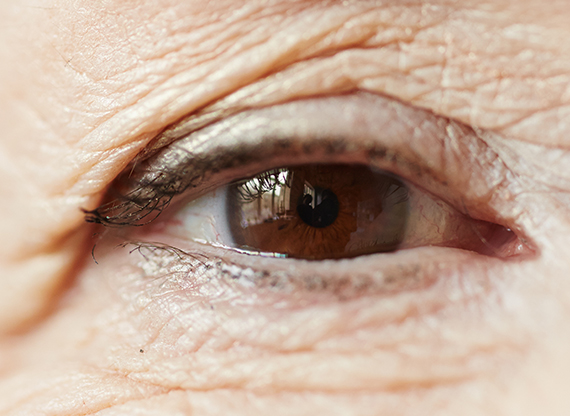
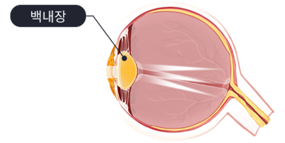
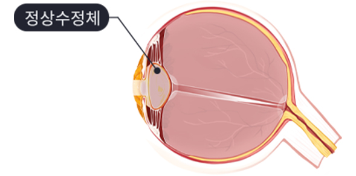
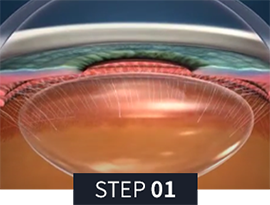
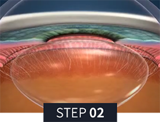
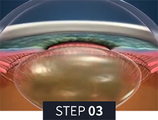
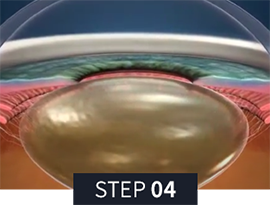

눈 속의 투명한 수정체가 혼탁해지는 질환

사람의 눈에는 거리에 따라 초점을 조절하는 수정체가 있는데,
이 수정체가 여러가지 원인에 의해 혼탁해지는 증상을
백내장이라고 합니다.
수정체가 혼탁해지면 빛을 제대로 통과시키지 못해 망막에
초점을 정확하게 맺지 못하여 안개가 낀 것처럼 시야가
뿌옇게 보이고 시력이 떨어지게 됩니다.


백내장

정상안
백내장은 연령 증가에 따른 자연스러운 노화 과정 중 하나입니다.
노화 이외에 백내장의 발생 위험을 높이는 요인들은 다음과 같습니다.
눈이 침침한 느낌이 지속됨
시력이 선명치 못하고 흐릿하게 보임
하얀 이물질들이 보이는 현상이 나타남
사물이 2~3개로 겹쳐보임
가로등, 형광등 등의 밝은 조명에서 빛이 번져보임
아래 항목들을 체크해보세요.

혼탁해진 수정체, 마취안약
점안 후 미세 절개

미세한 절개창을 통해
혼탁해진 수정체 제거

제거한 수정체 자리에
인공수정체를 삽입

인공수정체의 정확한
위치를 잡고 수술완료
미세절개로 통증 최소화, 손상 최소화
첨단 장비로 혼탁해진 수정체 말끔히 제거
맞춤형 인공수정체를 삽입해 노안, 난시까지 모두 개선
자동 안압 감시 시스템으로 안정성 극대화

월 화 목 금
am 09:00 ~ pm 06:00토 요 일
am 09:00 ~ pm 04:00점 심 시 간
pm 01:00 ~ pm 02:00수요일, 일요일, 공휴일 휴무입니다.
공휴일 있는 주는 수요일 대체진료입니다.